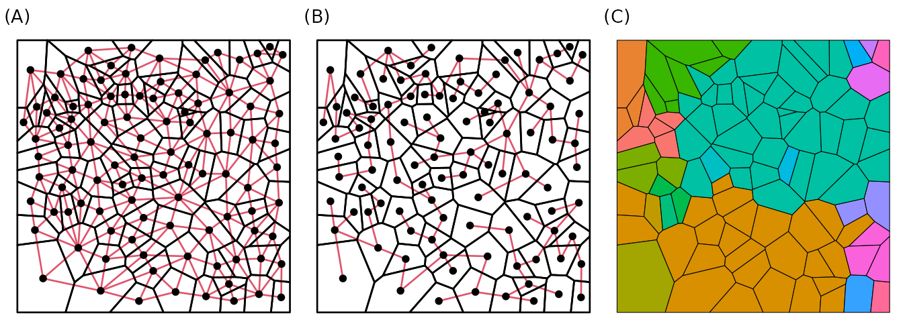
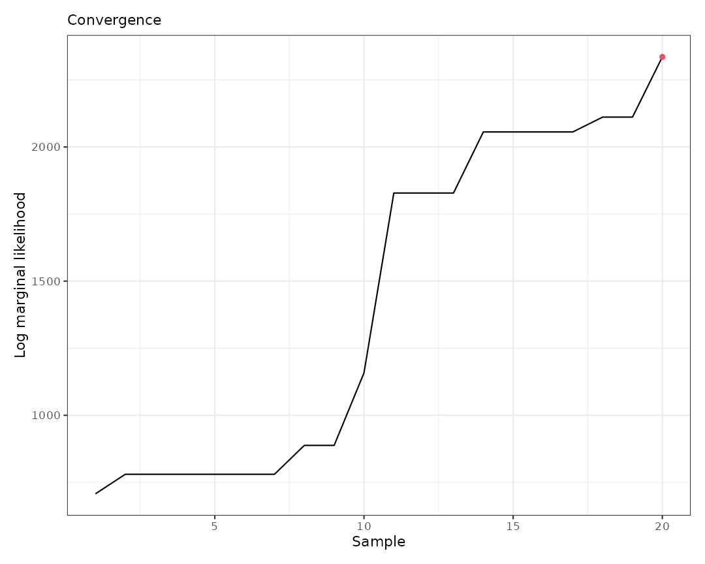
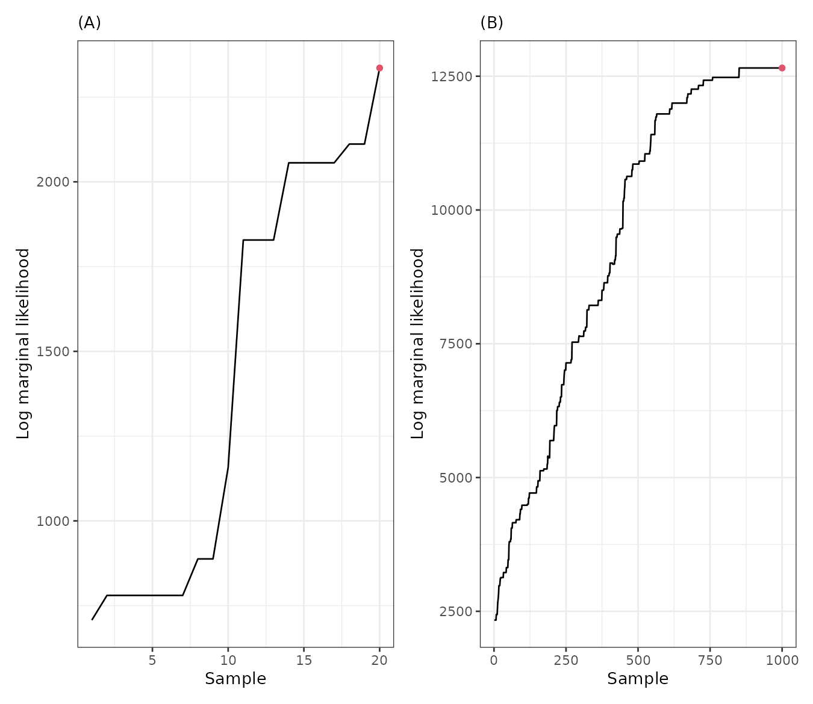

In this vignette we present additional features of the
sfclust package.
Data
The simulated dataset used in this vignette, stgaus, is
included in our package. It is a stars object with one
variable, y, and two dimensions: geometry and
time. The dataset represents the number of cases in 100
regions, observed daily over 91 days, starting in January 2024.
data("stgaus")
stgaus#> stars object with 2 dimensions and 1 attribute
#> attribute(s):
#> Min. 1st Qu. Median Mean 3rd Qu. Max.
#> y -1.170275 -0.2390084 0.0302046 -0.0004274323 0.2095926 1.370593
#> dimension(s):
#> from to offset delta refsys point
#> geometry 1 100 NA NA NA FALSE
#> time 1 91 2024-01-01 1 days Date FALSE
#> values
#> geometry POLYGON ((59.5033 683.285...,...,POLYGON ((942.7562 116.89...
#> time NULLTo gain some initial insights, we can aggregate the data weekly:
stweekly <- aggregate(stgaus, by = "week", FUN = mean)
ggplot() +
geom_stars(aes(fill = y), stweekly) +
facet_wrap(~ time, ncol = 5) +
scale_fill_distiller(palette = "RdBu") +
theme_bw()We can also examine the trends for each region:
stgaus |>
st_set_dimensions("geometry", values = 1:nrow(stgaus)) |>
as_tibble() |>
ggplot() +
geom_line(aes(time, y, group = geometry, color = factor(geometry)), linewidth = 0.3) +
theme_bw() +
theme(legend.position = "none")Some regions exhibit similar trends over time, but the overall patterns are more complex than polinomial functions. Our goal is to cluster these regions while accounting for spatial contiguity.
Clustering
Model
We assume that the response variable for region at time follows a normal distribution given the partition : where the mean is modeled based on the cluster assignment : where is the intercept for cluster , and is a latent random effect modeled as a random walk process. Specifically, we impose the condition:
The prior for the hyperparameter is defined as:
Initial clustering
sfclust uses an undirected graph to represent
connections between regions and proposes spatial clusters using this
graph through minimum spanning trees (MST). By default,
sfclust accepts the argument graphdata, which
should include:
- An undirected
igraphobject representing spatial connections, - An MST of that graph, and
- A
membershipvector indicating the initial cluster assignments for each region.
For simplicity, you can use the genclust function to
generate an initial random partitioning with a specified number of
clusters. In this example, we create a partition with 20 clusters:
set.seed(123)
regions <- st_geometry(stgaus)
initial_cluster <- genclust(regions, nclust = 20)
names(initial_cluster)#> [1] "graph" "mst" "membership"Now, let’s visualize how the regions were randomly clustered:
gg1 <- ggraph(initial_cluster$graph, layout = st_coordinates(st_centroid(st_geometry(stgaus)))) +
geom_edge_fan(linetype = 1, color = 2) +
geom_node_point(size = 1.5, color = 1) +
geom_sf(data = st_geometry(stgaus), fill = NA, color = 1, linewidth = 0.5) +
labs(subtitle = "(A)") +
theme_void()
gg2 <- ggraph(initial_cluster$mst, layout = st_coordinates(st_centroid(st_geometry(stgaus)))) +
geom_edge_fan(linetype = 1, color = 2) +
geom_node_point(size = 1.5, color = 1) +
geom_sf(data = st_geometry(stgaus), fill = NA, color = 1, linewidth = 0.5) +
labs(subtitle = "(B)") +
theme_void()
gg3 <- st_sf(st_geometry(stgaus), cluster = factor(initial_cluster$membership)) |>
ggplot() +
geom_sf(aes(fill = cluster), color = 1) +
labs(subtitle = "(C)") +
theme_void() +
theme(legend.position = "none")
gg1 + gg2 + gg3 & theme(plot.margin = margin(0, 0, 0, 0))
Sampling with sfclust
We will initiate the Bayesian clustering algorithm using our
generated partition (initial_cluster). Additionally, we use
the capabilites of INLA::inla to define a model that
includes a random walk process in the linear predictor, and custom
priors for the scale hyperparameter. To begin, we will run the algorithm
for only 50 iterations.
form <- y ~ f(idt, model = "rw1",
hyper = list(prec = list(prior = "normal", param = c(-2, 1)))
)
result0 <- sfclust(stgaus, graphdata = initial_cluster, formula = form,
logpen = -50, niter = 50, burnin = 10, thin = 2, nmessage = 10,
path_save = file.path("inst", "vigdata", "full-gaussian-mcmc1.rds")
)
result0#> Within-cluster formula:
#> y ~ f(idt, model = "rw1", hyper = list(prec = list(prior = "normal",
#> param = c(-2, 1))))
#>
#> Clustering hyperparameters:
#> log(1-q) birth death change hyper
#> -50.000 0.425 0.425 0.100 0.050
#>
#> Clustering movement counts:
#> births deaths changes hypers
#> 10 3 1 6
#>
#> Log marginal likelihood (sample 20 out of 20): 2335.767The output indicates that after starting with 20 clusters, the algorithm created 11 new clusters (births), removed 6 clusters (deaths), changed the membership of 3 clusters, and modified the minimum spanning tree (MST) 3 times.
The plot method allows us to select which graph to
produce. For example, we can visualize only the log marginal likelihood
to diagnose convergence. With just 50 iterations, we can see that the
log marginal likelihood has not yet achieved convergence.
plot(result0, which = 3)
Continue sampling
To achieve convergence, we can continue the sampling using the
update function and specify the number of new iterations
with the niter argument:
result <- update(result0, niter = 1000)
result#> Within-cluster formula:
#> y ~ f(idt, model = "rw1", hyper = list(prec = list(prior = "normal",
#> param = c(-2, 1))))
#>
#> Clustering hyperparameters:
#> log(1-q) birth death change hyper
#> -50.000 0.425 0.425 0.100 0.050
#>
#> Clustering movement counts:
#> births deaths changes hypers
#> 34 50 15 56
#>
#> Log marginal likelihood (sample 1000 out of 1000): 12654.03With 2000 additional iterations, there have been many clustering movements. Furthermore, when visualizing the results, we can observe that the log marginal likelihood has achieved convergence.
plot(result, which = 3)
gg1 <- plot(result0, which = 3) + labs(subtitle = "(A)")
gg2 <- plot(result, which = 3) + labs(subtitle = "(B)")
gg1 + gg2
Results
The final iteration indicates that the algorithm identified 10 clusters, with a log marginal likelihood of 12,708.35. The largest cluster consists of 27 regions, while the smallest contains only one region.
summary(result, sort = TRUE)#> Summary for clustering sample 1000 out of 1000
#>
#> Within-cluster formula:
#> y ~ f(idt, model = "rw1", hyper = list(prec = list(prior = "normal",
#> param = c(-2, 1))))
#>
#> Counts per cluster:
#> 1 2 3 4 5 6 7 8 9 10 11
#> 27 19 12 11 9 9 6 3 2 1 1
#>
#> Log marginal likelihood: 12654.03Let’s visualize the regions grouped by cluster.
plot(result, which = 1:2, sort = TRUE, legend = TRUE)Let’s visualize the original data grouped by cluster.
plot_clusters_series(result, y, sort = TRUE) +
facet_wrap(~ cluster, ncol = 5) +
labs(title = "Risk per cluster", y = "Response")